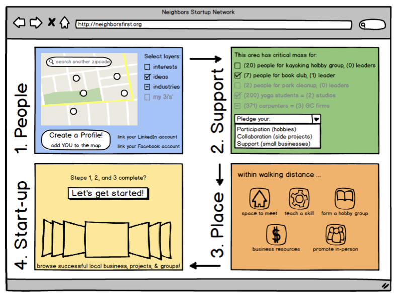

proposal: neighbors startup network // lightbulb
A website with a survey, profile, map, and resources allows anyone to pursue your hobbies, form a business, or launch your idea -- with your neighbors!

what makes this website the go-to site, and not additive (split the vote). link to facebook? how do you make it ubiquitous? easy to use, actionable items, lots of partners?
dream team-up local
There is a lot of potential among the unemployed and underemployed.
This tool takes an inventory of your local neighborhood's ideas, interests, industries, and passions. It displays it on a map so you can see who wants to do what near you.
This will spark people to form hobby groups, startup companies, new local businesses.
This data can also be used by job training programs to focus their attention to areas or industries.
Institutions can add to this data by showing where their graduates ended up and what their doing. (But this isn't necessarily what they WANT to do)
Multi-Use Schools
A component of using existing buildings as a space for classes and meetings for groups that decide to go forward together. This can be linked back to the
original proposal.